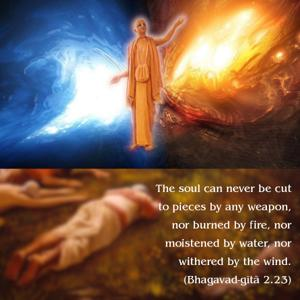
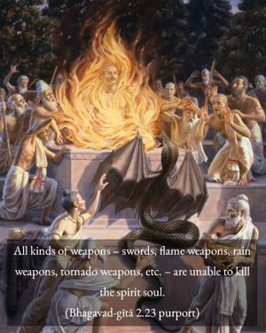

The soul can never be cut to pieces by any weapon, nor burned by fire, nor moistened by water, nor withered by the wind.


All kinds of weapons – swords, flame weapons, rain weapons, tornado weapons, etc. – are unable to kill the spirit soul. It appears that there were many kinds of weapons made of earth, water, air, ether, etc., in addition to the modern weapons of fire. Even the nuclear weapons of the modern age are classified as fire weapons, but formerly there were other weapons made of all different types of material elements. Fire weapons were counteracted by water weapons, which are now unknown to modern science. Nor do modern scientists have knowledge of tornado weapons. Nonetheless, the soul can never be cut into pieces, nor annihilated by any number of weapons, regardless of scientific devices.
The Māyāvādī cannot explain how the individual soul came into existence simply by ignorance and consequently became covered by the illusory energy. Nor was it ever possible to cut the individual souls from the original Supreme Soul; rather, the individual souls are eternally separated parts of the Supreme Soul. Because they are atomic individual souls eternally (sanātana), they are prone to be covered by the illusory energy, and thus they become separated from the association of the Supreme Lord, just as the sparks of a fire, although one in quality with the fire, are prone to be extinguished when out of the fire. In the Varāha Purāṇa, the living entities are described as separated parts and parcels of the Supreme. They are eternally so, according to the Bhagavad-gītā also. So, even after being liberated from illusion, the living entity remains a separate identity, as is evident from the teachings of the Lord to Arjuna. Arjuna became liberated by the knowledge received from Kṛṣṇa, but he never became one with Kṛṣṇa.